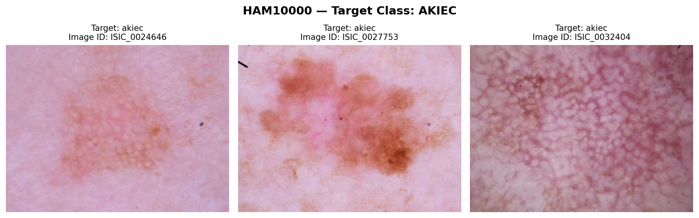
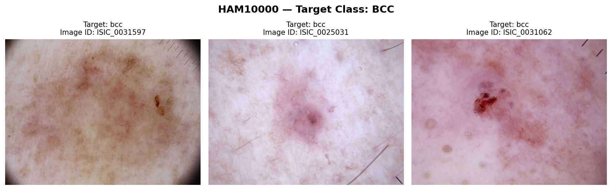
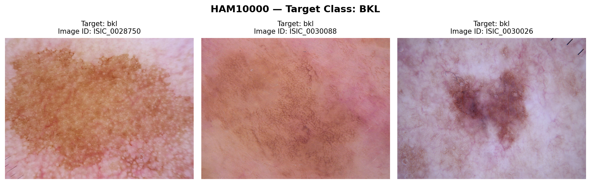
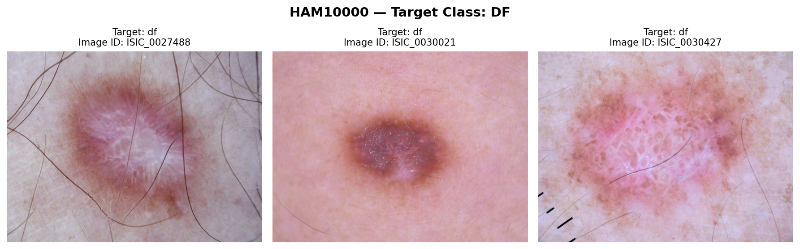
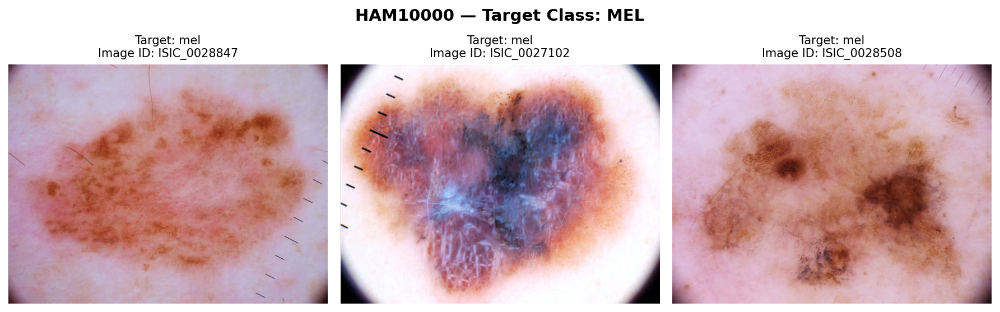
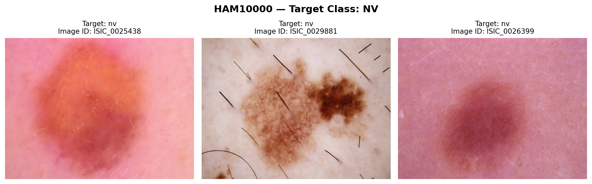
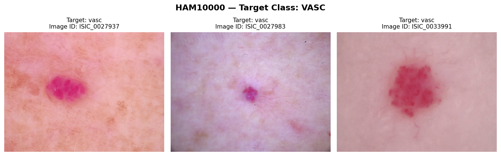
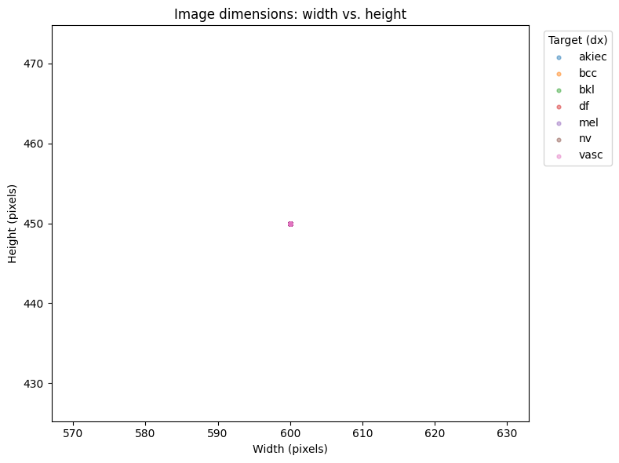
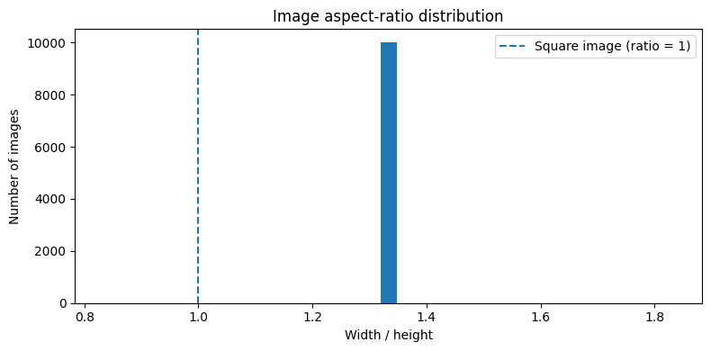
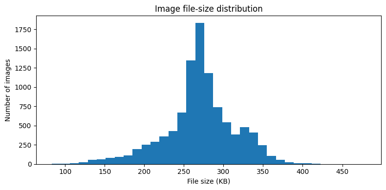

Three representative dataset images for target class akiec.
Exploring the HAM10000 dermatoscopic image dataset, its diagnostic classes, class balance, and image properties.
10,015 images matched to seven diagnostic categories. Image examples below are grouped into separate class panels.
View dataset ↗HAM10000 (Human Against Machine with 10,000 training images) is a collection of dermatoscopic images of common pigmented skin lesions. The notebook matches image filenames to the image_id and uses dx as the target label.
The metadata links each image through image_id and stores its diagnosis in dx. All 10,015 rows matched an image and a target label.
Kaggle dataset ↗The target distribution is imbalanced: the nevus class (nv) contains about two thirds of the images. Class-aware evaluation and sampling should be considered in later modeling.
Counts and percentages among the 10,015 unique images matched to a non-empty diagnostic label.
| Code | Diagnosis | Images | Share |
|---|---|---|---|
| nv | Melanocytic nevi | 6,705 | 66.95% |
| mel | Melanoma | 1,113 | 11.11% |
| bkl | Benign keratosis-like lesions | 1,099 | 10.97% |
| bcc | Basal cell carcinoma | 514 | 5.13% |
| akiec | Actinic keratoses / intraepithelial carcinoma | 327 | 3.27% |
| vasc | Vascular lesions | 142 | 1.42% |
| df | Dermatofibroma | 115 | 1.15% |
Class names are the diagnostic abbreviations used by the dataset. The class imbalance means overall accuracy alone may hide weak performance on rare diagnoses.
Notebook samples (three per class) show the visual variation in the dataset. Images are grouped by their dx target and retain their source image IDs.

Three representative dataset images for target class akiec.

Three representative dataset images for target class bcc.

Three representative dataset images for target class bkl.

Three representative dataset images for target class df.

Three representative dataset images for target class mel.

Three representative dataset images for target class nv.

Three representative dataset images for target class vasc.
The notebook uses the filename stem as image_id, then joins it to the metadata CSV. Images are counted once per ID, so copies in other folders cannot inflate the unique-image total.
Readable-image checks succeeded for all 10,015 matched images. Every image measures 600 × 450 pixels (aspect ratio 1.33); file size varies.

All readable images share the same dimensions: 600 pixels wide by 450 pixels high.

The aspect ratio is consistent at approximately 1.33 across the dataset.

File sizes vary despite identical image dimensions; the mean is 270.12 KB.